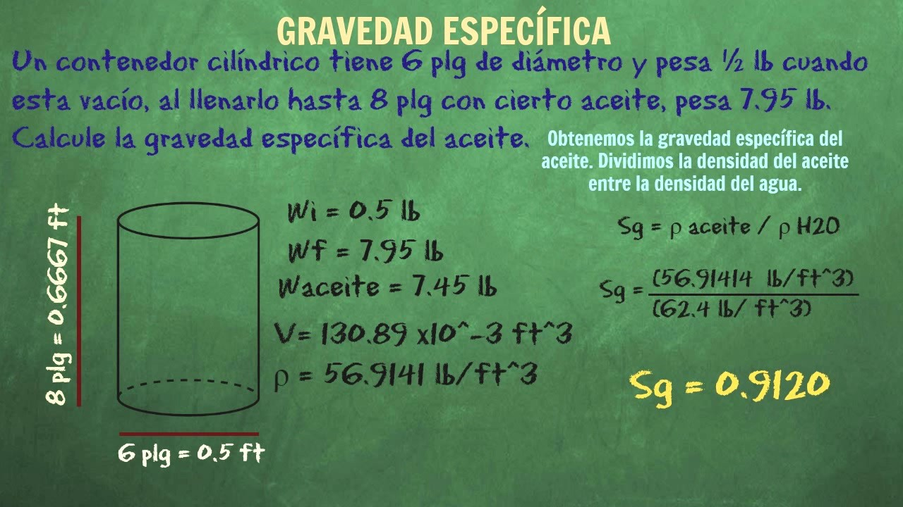
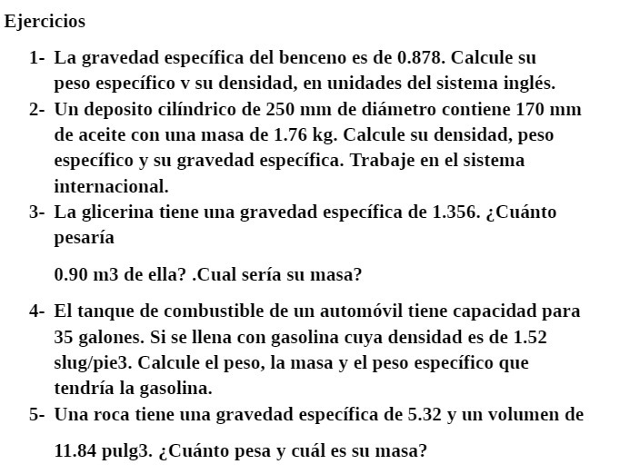

Densidad
La gravedad específica es una medida física que describe la densidad de un material en relación con la densidad del agua a una temperatura específica. Es una propiedad importante en diversas áreas de la ciencia y la ingeniería, ya que proporciona información sobre la composición y la pureza de los materiales. Comprender la gravedad específica y su aplicación en diferentes contextos nos permite analizar y caracterizar una amplia variedad de sustancias y compuestos.
La gravedad específica, también conocida como densidad relativa, se define como la relación entre la densidad de una sustancia y la densidad del agua a una temperatura y presión específicas. Matemáticamente, se calcula dividiendo la densidad de la sustancia por la densidad del agua. Dado que la densidad del agua es 1 g/cm³ (o 1000 kg/m³), la gravedad específica del agua es siempre 1.
La gravedad específica es una medida adimensional que proporciona una forma de comparar la densidad de diferentes materiales. Los materiales con una gravedad específica superior a 1 son más densos que el agua y tienden a hundirse en ella, mientras que los materiales con una gravedad específica inferior a 1 son menos densos y tienden a flotar.
La gravedad específica se utiliza ampliamente en la industria y la geología para determinar la composición y la pureza de los materiales. Por ejemplo, en la minería, la gravedad específica se utiliza para separar minerales valiosos de los desechos en procesos como la concentración por gravedad. En la industria química, se utiliza para medir la concentración de soluciones y evaluar la calidad de los productos.
Además, la gravedad específica es una propiedad importante en la agricultura y la ingeniería civil. En la agricultura, se utiliza para determinar la densidad aparente del suelo, lo que proporciona información sobre su estructura y capacidad para retener agua y nutrientes. En la ingeniería civil, se utiliza para diseñar y construir estructuras que sean estables y seguras.
En resumen, la gravedad específica es una propiedad física importante que proporciona información sobre la densidad y la composición de los materiales. Su estudio y aplicación nos permiten comprender y caracterizar una amplia variedad de sustancias y compuestos en diferentes contextos. Desde la minería hasta la agricultura, la gravedad específica es una herramienta invaluable que nos ayuda a analizar y aprovechar los recursos naturales y a diseñar sistemas y estructuras que sean seguros y eficientes.
Ejercicios
